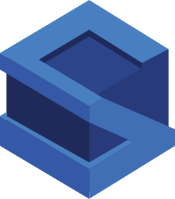
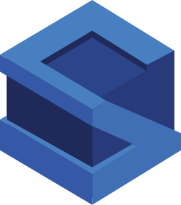

Hi, I'm Antoine Mesnil
I am a French student, currently at the Master - Machine Learning at the Université du Maine in France
I am a young creative developer, mostly interested by Web / Mobile development, Machine Learning / Deep Learning and video games development. More than
the technical aspect, I am interested in the design and motivated by the realization of projects thought a team effort. I am dynamic, curious, self-educated and a team player.

Coder
Technical experience on many technologies

Designer
Hability to imagine, identify and specify needs

Team worker
Motivated by group work
 
